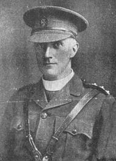

| Follow the above link to the main page for this topic or click the graphic below to visit the Homepage. |
 | Transcript of a Letter by Rev Edmund J. Cullen Written in 1915 during WWI Many thanks to the current family in Ireland and England |
 | Edmund Cullen, one of the last generations of Cullens to have lived at Liscarton Castle in Co Meath, was the fourth son of James and Kate (Lynch) Cullen. James was the son of Hugh Cullen of Prospect. Rev Cullen served in WWI in France and the below letter was penned to his niece Catherine Matthews (nee Delaney) after the battle of Hill 70 in September of 1915. Catherine was a daughter of Mark and Mary Anne (Cullen) Delaney. The original letter is in the possession of a grandson of Catherine Matthews. This grandson is currently a writer/producer in Irish television. Scan services courtesy of Scott Kusser |
|
30'th September, 1915
My dear... I got your welcome letter yesterday - just as we left the region of the recent great advance. The battle of hill 70 will never be forgotten by me as long as I live. The sights of horror are simply beyond description! Imagine a short road so strewn with dead and dying that those able to do so were kept very busy lifting the dead into a ditch to allow guns, ambulances etc., to pass - and this amongst agonising groans all around - and you have some notion of many such scenes. The evening before battle I went round hearing confessions and giving Holy Communion in field or remains of houses along the line, and it was very sad to see these poor fellows laid out so soon - but sadder still to see practically all the young officers and some of the Commanding Officers whom I knew so well - but for whom I could do nothing spiritually, all Presbyterians, - brought in, either dead, or horribly mutilated. I expected horrors, and had already cases of shocking mutilations, but I never dreamt of anything like this. I had the consolation of attending about 19 Germans, and felt so pleased to be able to hear their Confessions in their language, as they did not speak a word of French or English. This murdering business went on in awful weather - rain, black mud, and every other inconvenience that can be thought of. Of course, it was a great victory, but a very bloody one. The Germans were simply massacred. I don't think white flags were respected at all - save when whole companies of Germans gave themselves up. What between gas, bombs, bayonets, rifle fire, machine guns and high explosive shells, poor human nature had no chance, and fragments unrecognisable as belonging to human beings were the result. The battle commenced by a four days' bombardment, and a day and a night of intensive bombardment. During this - a gun about every 20 or 30 yards along, firing at points 4 to 6 miles away, I went along the artillery, hearing the men's Confessions and giving Holy Communion. I rode up at midnight to our battery with a Captain Kenny, London, but his parents Irish. When I got up the Colonel had just been killed by a shell - Butcher, related to Bishop Butcher, formerly at Ardbraccan, Navan. The Major, two Captains and 16 men were Catholics, so I heard all their Confessions in a little hole, and it was most touching to see Major (the son of Lord Bellhaven), his two Captains, and all the Catholic gunners kneeling on the ground behind their guns and receiving Holy Communion, and then making their thanksgiving aloud with me at 12 o'clock at night. Of course, these expeditions were most perilous, but what is a priest for save such things as this? When I tell you that shells were flying about, you know why I always ask prayers. Next morning, I went to another battery, and the Major there, Hanna, a relative of Hanna, K.C., an Irishman (Protestant), told me that we, priests, were always after the men, while the others never appeared in such places. When I had finished the Catholics there, he brought me to his big guns and said "as we are both Irishman we may as well celebrate our meeting by having a crack at the Huns", so he fired two rounds in my honour. You see I have had some rare experiences. All are very hopeful of events now as the ammunitions seem to be quite sufficient, and a wonderful spirit pervades all ranks. The French are doing marvels. Their prisoners mount up to 21,000. We took about 3,000. It was a wonderful spectacle! Procession after procession of Germans marched by. Their officers seemed to feel it, but the men were delighted that they were taken and gave themselves up in hundreds. Our division (15th) has distinguished itself, and two young officers of my mess will get the Military Cross, but the casualities in officers were enormous . . . . I am in greatest form, and am most grateful for your prayers. Get all the prayers of the poor around you for me and my work. It is owing to someone's prayers that I escaped a shell in the trenches. I slept on the floor last night in a wee store room - small and smelly, but this is nothing. If you saw what the poor soldiers suffer - and officers - even Colonels, endure, you would be shamed into enduring anything . . . . E.J. Cullen, C.F. 45th F.A., B.E.F. France |